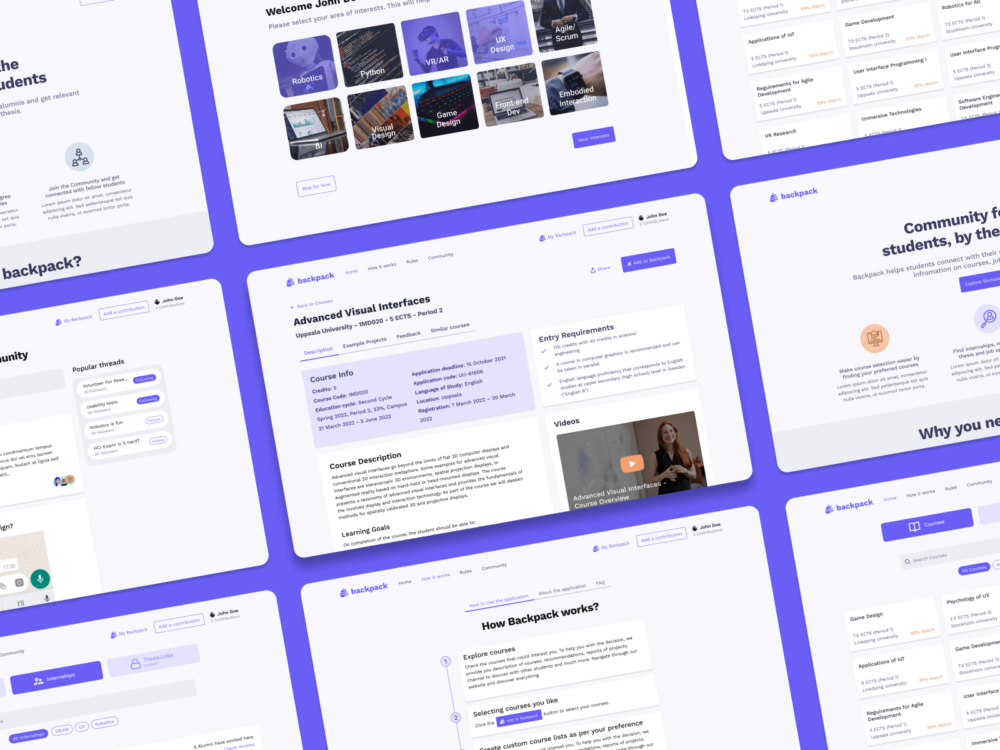
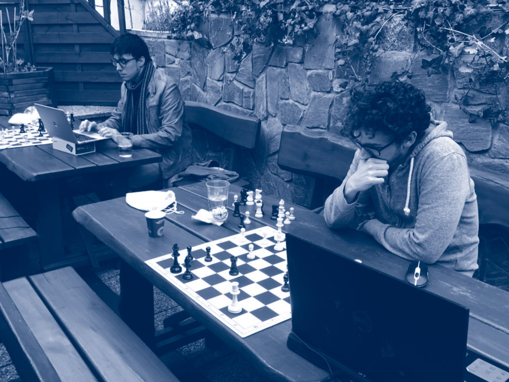
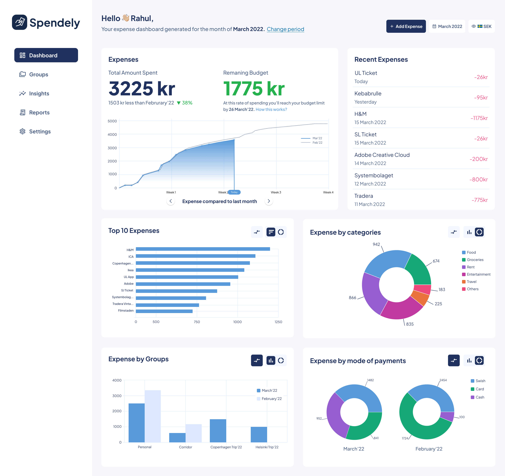

return
Research
Two years in Sweden, studying how people fit with immersive and sensing technology. It happened during an MSc in Human-Computer Interaction at Uppsala University, after a B.Tech in Information & Communication Technology at SASTRA University in 2017. In the same years I was designing XR at Warpin, so research and practice ran side by side.
Publications
Everything is also listed on ORCID.
Book chapter · Springer LNCS · 2025The Ethics of Extended Realities: Insights from a Systematic Literature ReviewWith Henrik Söderlund and Asreen Rostami. Ethical issues in AR, VR, and mixed reality across four domains.Conference paper · ACM CHI 2025Towards Personalized Physiotherapy through Interactive Machine LearningWith Laia Turmo Vidal, Annika Waern, Rosa Cabanas-Valdés, Lauren van Loo, and Yinchu Li. A conceptual infrastructure for in-clinic and out-of-clinic support.Master’s thesis · Uppsala University · 2023The Ethics of Extended RealitiesMy master’s thesis: a systematic literature review, supervised at RISE and Uppsala University.
Research projects
RISE · 2023Ethics of extended realitiesA systematic review of the ethical risks of AR, VR, and mixed reality, turned into design recommendations.Uppsala University · 2022Interactive ML for physical trainingWearable sensor prototypes feeding an interactive machine learning model for personalised training.
Coursework case studies
Uppsala University · 2021BackpackHelping HCI students choose electives with confidence. Uppsala University · 2022Socialize Hybrid ChessA tangible prototype to bring the social side back to remote chess.
Uppsala University · 2022Socialize Hybrid ChessA tangible prototype to bring the social side back to remote chess.

Uppsala University · 2022Design for AwarenessHelping EV drivers understand grid stress and charge with it in mind.Uppsala University · 2022Socialize Hybrid ChessA tangible prototype to bring the social side back to remote chess.
Uppsala University · 2022SpendelyAn expense manager for international students, in two currencies.